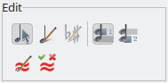

Many entries in the File and the Edit pulldown menus are the same as in many other programs, but there are also some TuxGuitar specific actions.
File Management
All file related actions are summarized under the File pulldown menu. The most important function are also accessible in the main toolbar:

Creating new files
The menu item File → New → New Song (or the keyboard shortcut Ctrl+N) by default opens a new tab containing a song with only one empty guitar track. This template is also used when you start TuxGuitar without any specific file.
You can set your own template by selecting a TuxGuitar file under File → Set custom template. From now on, new songs will be created with your selected template. The menu item File → Revert to default template goes back to the default one-guitar-track template.
There are two more predefined templates you can create new files from: File → New → Blues Trio and File → New → Classical Guitar Duo.
Open, close, save and print files
All other entries in the File menu are quite self-explanatory:
- File → Open (Ctrl+O): Opens a file from the local computer.
- File → Open URL: Here you can enter the URL of an online file TuxGuitar can open. You can view and play the file in the same manner as if it was opened from a local folder. Of course, you cannot save the file back on the same URL, you can save it only as a local file.
- File → Close: Closes the current tab.
- File → Close Others: Closes all but the file in the active tab.
- File → Close All: Closes all tabs and open a new file from the default or your custom template.
- File → Save (Ctrl+S): Saves the file in the active tab in the latest TuxGuitar format. If the song has never been saved yet, the Save As dialog opens.
- File → Save As (F12): Saves the file in the active tab to a new file in the latest TuxGuitar format.
- File → Import: Here you can import MIDI files into TuxGuitar.
- File → Export: Songs can be exported as SVG, Audio (WAF and others), MIDI, LilyPond, MusicXML, PDF, ASCII, Guitar Pro or old TuxGuitar formats.
- File → Print Preview: Opens a new window where you can see how the file would be printed.
- File → Print (Ctrl+P): Prints the file. You can choose to only print one or all tracks, select a measure range and various other options.
- File → History: Here you can directly access up to 10 recently opened files.
Exit TuxGuitar
The File → Exit menu item quits TuxGuitar. Even if it is not stated in the menu, Alt+F4 closes the current program in most desktop environments.
Nothing too complex here, so let’s move right along.
Basic editing
Here we are explaining all actions under the Edit pulldown menu.
Cut, Copy and Paste
- Edit → Cut (Ctrl+X): Deletes the current selection and copies the content into the clipboard. This only works on selections.
- Edit → Copy (Ctrl+C): Copies the current selection into the clipboard. If nothing is selected, a dialog opens where you can choose the measures to copy and whether to copy these measures only from the current track or from all tracks.
- Edit → Paste (Ctrl+V): Inserts the copied notes or measures at the current cursor position. When a selection is pasted, the previous content will be overwritten. If you paste previously copied measures, you can select whether to overwrite the current content of the target measures or to insert new measures.
- Edit → Repeat (Ctrl+R): Here you can copy the current selection into the clipboard and insert it directly after that in one step.
Undo/Redo
Edit → Undo (Ctrl+Z) will undo your last action, Edit → Redo (Ctrl+Y) will redo what you have just undone.

Edit Mode (applies only to Score Editing)
Now we’re getting a little more interesting. The remaining menu items in the Edit pulldown menu lay down some options for those who prefer to edit via the score staff instead of using tablature. Keep in mind that these settings only affect the score staff (the upper set of lines with standard musical notation on them). If you only edit via the tablature staff, you can pretty ignore these settings, because they will not make any difference in your workflow.
If your score staff is not visible, you can enable it in the View menu.
Selection Mode
The menu item Edit → Selection Mode (or the third icon in the Edit section of the Edit Toolbar) will put you into "Selection Mode". In this mode, you can click your mouse anywhere in the score staff, and it will simply move your playback cursor to that location, without making any changes to the score itself. Good for quickly moving around in your score without worrying about accidentally altering notes.
Score Edition Mode
Clicking on Edit → Score Edition Mode (the fourth icon) will put you into "Score Edition Mode". With this mode selected, you can enter notes into the score staff simply by clicking where you want the note to go. You can insert notes into lines or spaces, and they will take on the duration you currently have selected in the note duration menu. One note: this option alone will only insert natural-pitched notes (i.e., no flats or sharps). If you want to insert sharps/flats or change pre-existing notes to sharps/flats, you will need to enter Sharp/Flat Mode.
Sharp/Flat Mode
Edit → Sharp/Flat Mode is simply a sub-option of the Score Edition Mode. You must use Sharp/Flat Mode if you want to enter sharp or flat notes or change pre-existing notes to sharp or flat.
Voice selection
The last two entries in the Edit menu (or the first two icons in the Edit Toolbar) select the voice you want to edit: Voice 1 or voice 2.